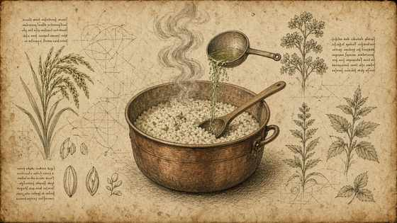
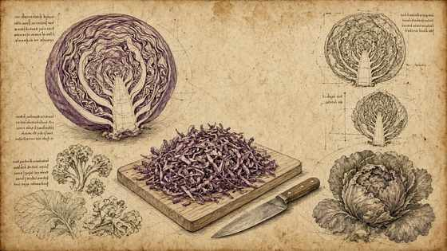
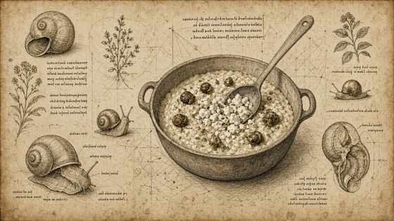
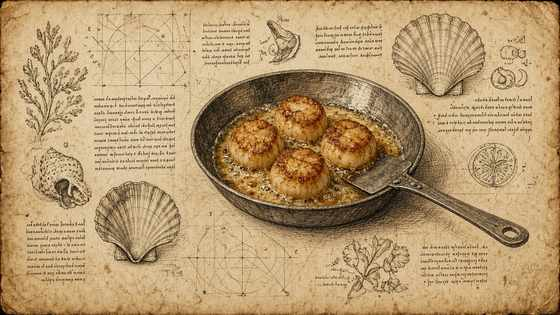
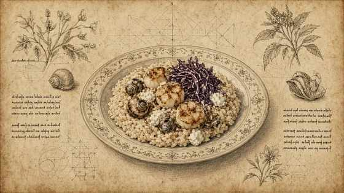

01
Brodo alle erbe, cipolla, tostare il riso e bagnare col brodo (risotto in bianco).
Herb stock, onion, toast rice and moisten with stock (white risotto).

MasterChef Magazine · Ricetta VIII · Tutorial
MasterChef Magazine · Recipe VIII · Tutorial
Risotto bianco al caprino su brodo alle erbe; lumache; capesante in due cotture; cavolo rosso. — struttura Fooby, tavole Leonardo; quantità solo se dette nel video.
White goat-cheese risotto on herb stock; snails; scallops two ways; red cabbage. — Fooby structure, Leonardo plates; quantities only if spoken on camera.
← Scheda del quaderno ← Notebook cardBrodo alle erbe, cipolla, tostare il riso e bagnare col brodo (risotto in bianco).
Herb stock, onion, toast rice and moisten with stock (white risotto).

Preparare il cavolo rosso (metodo dettagliato non detto).
Prepare red cabbage (detailed method not stated).

Cuocere le lumache; panna come detto; finire il risotto col caprino.
Cook snails; cream as said; finish risotto with goat cheese.

Capesante: parte in padella, parte con lumache/cavolo; aglio, pepe, erbe.
Scallops: some pan-fried, some with snails/cabbage; garlic, pepper, herbs.

Impiattare risotto al caprino con lumache, capesante e cavolo rosso.
Plate goat-cheese risotto with snails, scallops and red cabbage.
